It notices what matters
A letter, contract or meeting arrives. Zenith identifies the subject, people, dates and obligations.
Stop searching through folders and rebuilding context by hand. Zenith turns documents and meetings into a private AI work partner that finds what matters, shows its sources and prepares the next step – on hardware you control.
A scanned letter should not create another evening of renaming files, searching folders and reconstructing context. Zenith is built to understand what arrived, connect it to what you already know and help you move forward.
Bring order to the past. Turn scans, files and correspondence into a connected archive.
Understand the present. Find the right facts, people, deadlines and decisions with sources.
Prepare what comes next. Let your private AI partner propose the next useful action.
Your archive holds contracts, conversations and decisions that should not become somebody else's dataset. Zenith keeps its core document and AI workflow local; optional external tools are used only when you explicitly enable them.
A fully automatic pipeline turns unstructured files into a searchable, connected knowledge base – without any manual tagging.
A watched inbox folder ingests every file: PDFs, Word, Excel, photos, scans. Drop it in – Zenith does the rest, around the clock.
Worker Service · Hot FolderA vision-language model reads every page like a human: text, tables, stamps, handwriting. It extracts title, sender, amounts, dates and tax relevance as structured data.
Qwen3-VL 30B · Structured JSONPeople, companies, projects and places are recognised as entities and linked across documents. Duplicates? Merge them with one click.
Entities · Relations · MergeSemantic search plus AI chat with source references. Complex questions across document boundaries – answered in seconds, verifiable with one click.
RAG · Vector Search · RerankingZenith already makes an archive searchable and answers questions with sources. The next step is a controlled local agent that can prepare useful work – without becoming an uncontrolled black box.
A letter, contract or meeting arrives. Zenith identifies the subject, people, dates and obligations.
The agent gathers related documents, earlier correspondence, decisions and deadlines from your archive.
It drafts a reply, checklist, dossier or reminder – with sources and a clear plan for your approval.
The Zenith Agent is being designed around an MCP-compatible tool layer. Only approved tools are available, permissions stay narrow and consequential actions require confirmation.
Record or import a meeting, create the transcript locally and let Zenith extract summaries, decisions and action items. The result becomes searchable and can be linked to the relevant project and documents.
Source-linked results, explicit approvals and an activity log make the agent's work reviewable. Sending, deleting and other high-impact actions stay behind a confirmation step.
The document core is working today. The Zenith Agent and local meeting transcription are clearly marked as the next capabilities now entering prototype development.
Instead of stopping at an answer, Zenith can prepare the next task: organise an incoming document, assemble a dossier, draft a reply or create a checklist. You see the plan and approve important actions.
MCP-compatible · Approval gates · Activity logTurn meetings into searchable transcripts, concise summaries, decisions and action items. Keep the recording and processing local, then connect the result with the right project and documents.
Local speech-to-text · Decisions · Action itemsSearch for "all tax-relevant documents from 2025" and find exactly that – even if no file ever contained those words. Vector search compares meaning, not keywords. Optional reranking sharpens the top results.
Vector search directly in SQLDiscuss your document inventory in natural language. Drag a PDF or photo straight into the chat and ask questions about it. Every answer cites its sources – one click opens the original.
Drag & drop · Source referencesZenith detects appointments and deadlines inside documents and proposes them as calendar entries. You confirm – nothing gets lost.
Deadline detectionPeople, companies, projects – automatically recognised and linked across your archive. Merge duplicates manually with full control.
Manual mergeWatch in real time which file is being processed, what's queued and how fast the pipeline runs. Full transparency instead of a black box.
Real-time statusEvery document is broken down into structured data: title, sender, date, amounts with currency, tax relevance, category. Questions like "all documents for my 2025 tax return" become a single click.
Amounts · Dates · Tax flagsZenith runs as a modern web app in your local network. Desktop, tablet or phone: your knowledge base is one browser tab away. No client installation, unlimited users.
Blazor · ResponsiveEnterprise-grade AI shouldn't feel like enterprise software. Zenith's interface stays out of your way – on the desktop and on your phone.
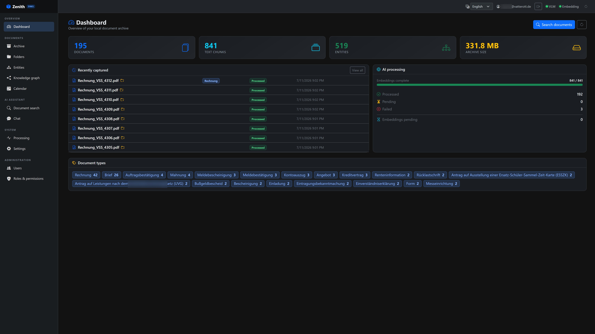
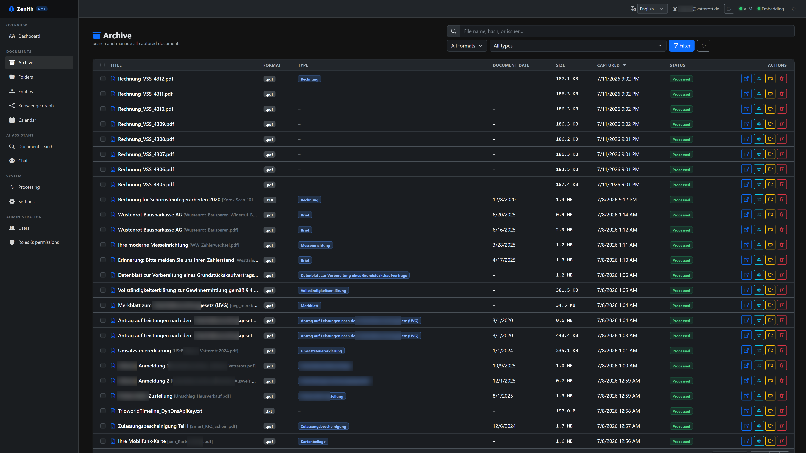
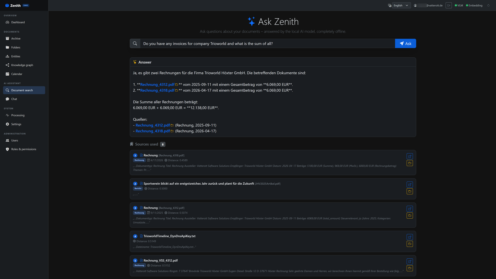
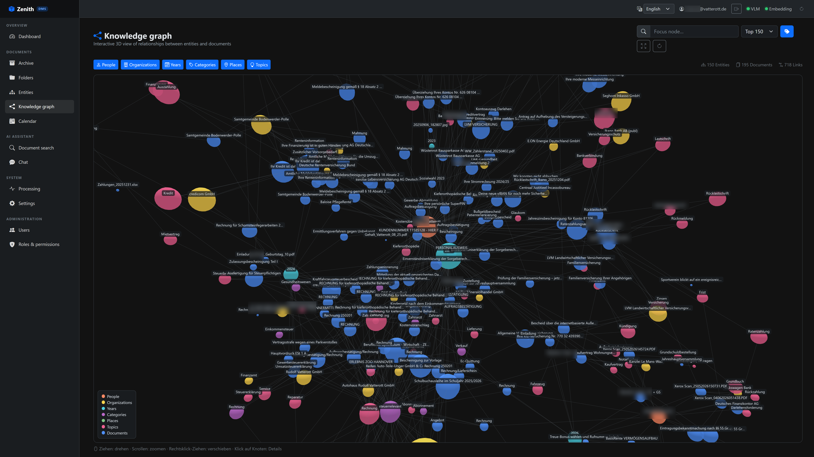
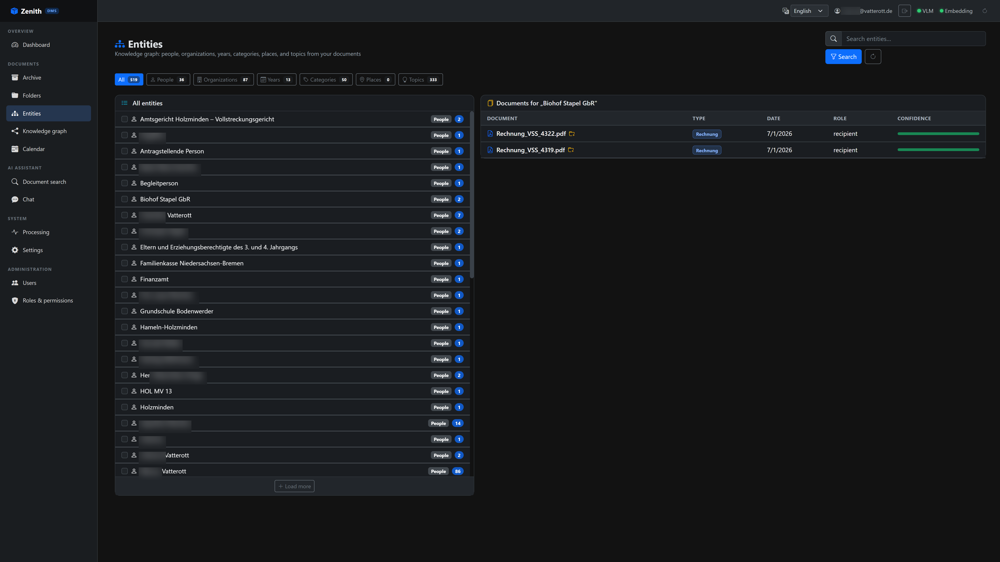
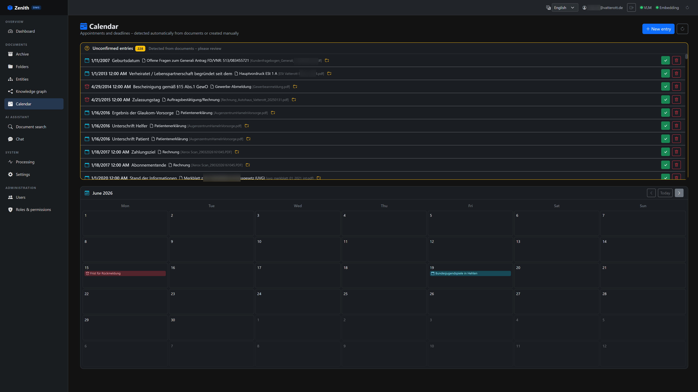
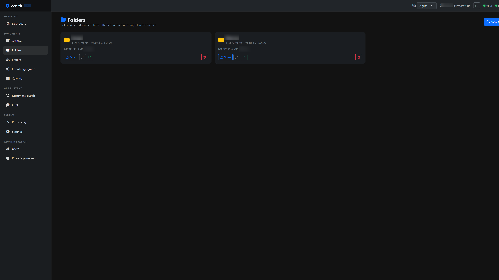
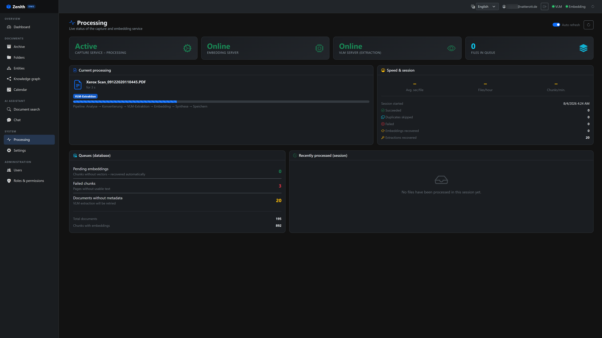
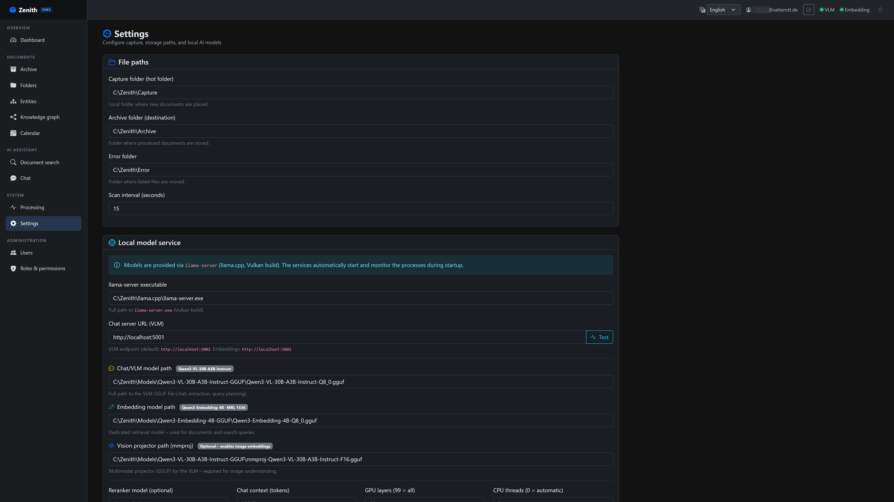
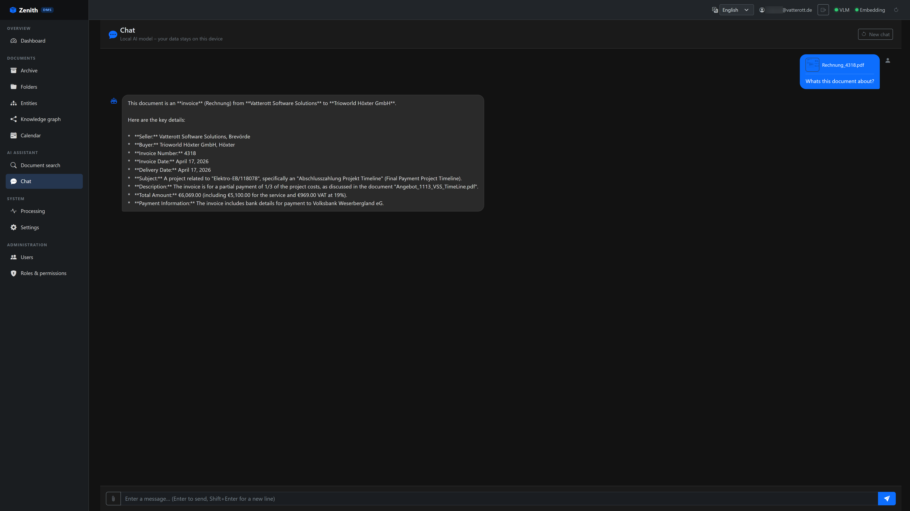
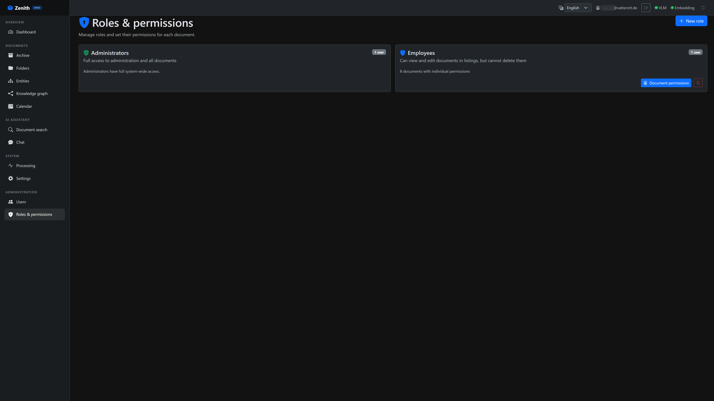
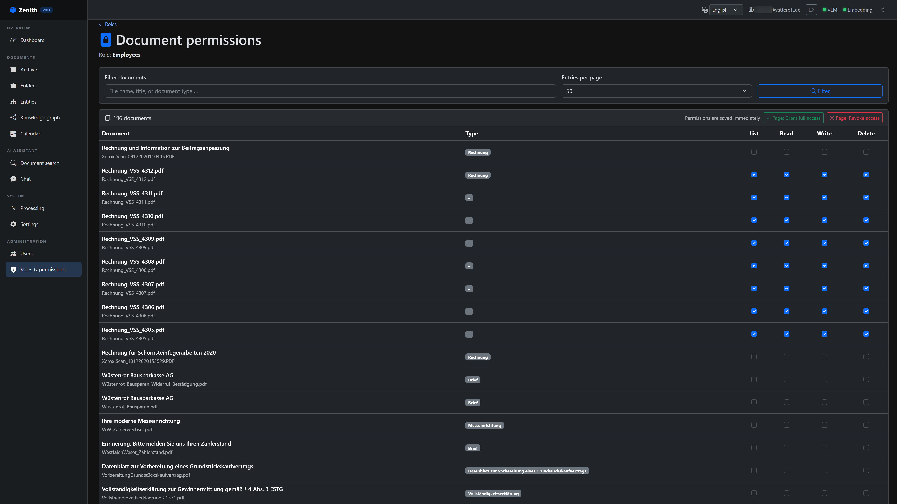
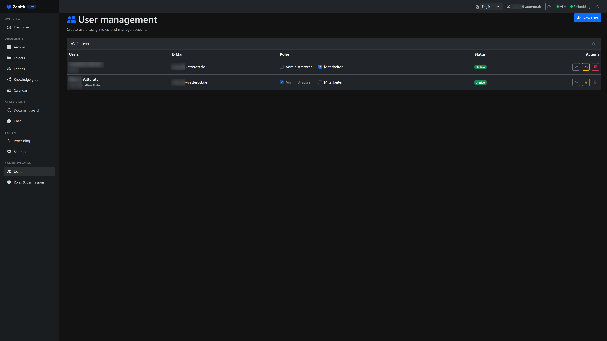
Wherever critical documents pile up and knowledge lives in filing cabinets – Zenith turns it into instant answers.
Manuals, maintenance logs, certificates – ask questions about your entire machine documentation and get instant, precise answers. Offline, right on the shop floor.
Plans, building regulations, correspondence across years of projects – semantically searchable. Deadlines from permits land in the calendar automatically.
Leases, utility statements, insurance policies per property – linked as entities. Special termination rights and notice periods surface on time.
Client files, opinions, correspondence – professional secrecy demands local processing. Zenith searches thousands of pages without a single byte leaving the office.
Reports, referrals and lab results can stay inside the practice network. Local processing supports a data-protection-conscious operating model.
Insurance, contracts, invoices, warranties – the whole household archive becomes searchable. "All documents for the 2025 tax return" is one question away.
Three specialised AI models orchestrated on one silent mini PC – engineered for 24/7 operation next to your desk.
The Minisforum MS-S1 Max delivers workstation-class AI performance: up to 96 GB RAM dedicated to the GPU – enough to run a 30-billion-parameter vision model entirely in memory.
Qwen3-VL 30B reads and understands documents visually. Qwen3-Embedding 4B builds the semantic index. A dedicated reranker sharpens search results. Each does one job – brilliantly.
An MCP-compatible layer will expose only approved capabilities to the agent. Plans, confirmations and activity records keep autonomous assistance bounded and reviewable.
Meeting audio is planned to be transcribed and structured on the local system, so conversations can become searchable knowledge without a mandatory cloud transcription service.
Embeddings live directly in the database – no separate vector-store infrastructure. Semantic search across thousands of documents in milliseconds, transactionally safe.
Zenith needs no internet for everyday operation or AI processing. It can run in an isolated network, reducing the external attack surface and keeping document processing on site.
Retrieval-Augmented Generation means the AI answers from your documents, not from vague memory. Every statement links to its source – verifiable in one click.
Built on .NET 10 and Blazor with a robust worker-service pipeline. Automatic retries, live status, clean data model – engineered for years of unattended operation.
The campaign funds the software work that turns the prototype into a dependable product: the controlled Zenith Agent, local meeting transcription, installer, security, testing, documentation and onboarding.
Clear separation: Indiegogo rewards are software access and project participation. No computer, GPU, server or other hardware is included.
Before we publish final packages, we want to understand your archive, workflow and security requirements. Founding customers receive a personal demo, an individual offer and preferred launch access.
No payment is collected through this website. A reservation only becomes binding after an individual written offer with an agreed scope, price and delivery window.
Yes – completely. All three AI models, the database and the web interface run on the device itself. Zenith never phones home: no telemetry, no license checks, no cloud fallback. You can operate it in a fully air-gapped network.
PDFs, Word, Excel, PowerPoint, e-mails and images (JPEG, PNG, TIFF – including scans and photographed documents). The vision model reads documents like a human: tables, stamps and even handwriting are captured.
As many as you like. Zenith runs as a web application in your local network – every device with a browser can access it. There are no per-user licences and no artificial limits.
Your original files stay in your file system – Zenith works with copies and indexes. Backup requirements are defined during the needs assessment; an external local backup can be included in the individual offer.
No. Zenith is delivered pre-installed and configured for the agreed environment. The exact installation and onboarding scope is documented in your individual offer.
The market launch is planned for October 2026. Before then, we invite interested organisations to a personal demo and needs assessment. If both sides see a good fit, you receive an individual written offer with a defined scope, total price and delivery window. Contacting us or attending a demo creates no purchase obligation.
The first version will focus on bounded document workflows: classifying incoming files, gathering related material, preparing dossiers, drafting replies and creating checklists or reminders. Approved tools, narrow permissions, source references, confirmations and an activity log are part of the design. The agent will not silently send, delete or make high-impact decisions.
The planned prototype will record or import meeting audio, transcribe it locally and derive a summary, decisions and action items. Transcripts then become searchable and can be connected with projects, people and documents. Recording participants remains the user's legal responsibility.
Follow the Indiegogo campaign, see the working foundation and help shape the private AI partner you would trust with your documents and meetings.
Software campaign · No hardware reward · Local-first · Human-controlled agent